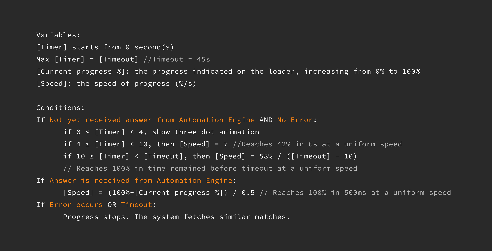

AI Loading State
UX Design · 2023
Overview
Chegg, a leading higher-education platform with millions of subscribers, revamped its Q&A product in 2023 to leverage generative AI for personalized study help. Before the streaming mechanism of AI responses was in place, users faced up to a 45-second wait for AI-generated answers, which had huge risk of user drop-off. As the sole designer, I leveraged my expertise in motion design and strong logical thinking to address this challenge successfully.
My Contributions
- Developed a creative solution to address the challenge of long AI loading and the uncertainty surrounding response generation outcomes. Without my solution, the majority of users would bounce.
- Visualized the complex backend logics of my solution for clear and effective communication with the PM and engineers.
Duration
3 Weeks
My Role
Sole UX Designer
Team
UX Designer (Me)
UX Content Designer
Product Manager
Software Engineers
Product Marking Manager
Tools
Figma
FigJam
Confluence
Context
The AI chat experience requires effective loading state design
In Chegg’s new AI conversational learning experience, users would either instantly receive an expert solution from the archive or wait for an AI-generated solution from the Automation Engine, depending on which source provided higher quality for the specific topic. While answer streaming was a common way to mitigate long LLM response times, it required time to implement. In the interim, we needed a design solution to manage the delays and prevent user drop-off.
Challenges
The loading time of AI responses ranges from 3s to 45s
The first question that came into my mind was: how long does it take to get a response from the AI? This seemed like a straightforward question, but I realized it was far more complex than I anticipated when I posed it to my PM. To get an accurate answer, we needed input from five backend teams to run load tests and calculate the average time range.
Since understanding this was critical for brainstorming solutions, I took the initiative to find out the anwer with the PM and engineers. I visualized the backend loading timeline, breaking down the intricate process to make the problem easier to address. This diagram was highly appreciated by stakeholders and significantly accelerated the process of understanding loading times.
After a week of collaborative effort, I finally had an answer: the loading time for most responses ranged from 3 to 45 seconds. This presented a significant challenge because, as the Nielsen Norman Group states,
"A 10-second delay will often make users leave a site immediately."
— let alone a 45-second wait.
Meanwhile, I discovered two other challenges:
- Uncertainty in loading time: We couldn’t estimate the exact loading time for each response when the system receives a question, leaving no clear way to inform users about how long they should wait.
- Response failure: Not all responses could be generated within the 45-second limit, meaning there was no guarantee that users would receive an answer even after the long wait.
Ideation
How to keep users on the page?
Could we present a similar Q&A from the archive while the user waits for a response? This was my initial idea, but I soon realized it wouldn’t work. Previous UX research showed that users would leave Chegg and search other sites for solutions if the relevance wasn’t high. After discarding this approach, I started considering another question: how can we design the loading state to encourage users to wait longer?
To keep users engaged while they wait, there were two main approaches: first, we needed to explain why the delay was happening, and second, we should provide an estimated wait time. While this seemed straightforward in theory, the execution turned out to be much more challenging.
Design iteration
How do we communicate the loading process to users
If I were to tell users, "Once we receive your question, it's sent to a moderation service to check for academic violations, then the subject is detected. After that, the question is routed to the Automation Engine to determine which model should answer..." it would do nothing but adding confusion. I collaborated with the content designer and PMMs on messaging strategies, and we aligned on the following approaches:
- Focus on the value: The messages should communicate clearly that we're working on generating a personalized, high-quality solution that’s worth the wait.
- Dynamic messages: The messages should update periodically to show progress and set the right tone throughout the waiting process.
Design iteration
It's all about perception
The loader is a great way to keep users engaged by providing a sense of control and transparency. Ideally, it should show how much time is left for the loading process. However, in my case, an estimated loading time was unavailable, and I almost abandoned the idea of adding a loader.
While drawing inspiration from other products and brainstorming with engineers, I realized that the actual loading time isn’t as important as the perceived loading time. If the design can make users feel that the wait is shorter, then it’s a success.
Three-step loader
The first version of the loader I designed broke the loading process into three steps to make it feel more manageable. I worked with the engineers to see if the frontend could fetch backend status updates, and soon I discovered that it wouldn’t work because one step took the majority of the loading time, while the others took just one or two seconds.

"Fake" loader
With no estimated loading time and no clear way to break the process into steps, I had to get creative in shaping the user’s perception. The loader relied on two clever tricks: keeping the loading animation in constant motion to signal progress and starting the progress bar faster before slowing down, using the sunk-cost effect to make it harder for users to abandon.
Here’s how the loader worked:
- The progress starts quickly, giving the impression that most of the work is already done.
- It then slows to a consistent pace.
- Once the answer is ready, the progress jumps to 100%, signaling completion.
I translated this approach into "if/then" logic and developed formulas to calculate the loader’s progress, making it easy for engineers to implement. These formulas were also highly scalable, ensuring they could adapt to any changes in the timeout limit without requiring significant rework.
Desig iteration
Designing for different scenarios
As mentioned earlier, the loading time ranges from 3 to 45 seconds, with a small chance (around 5%) that the system will hit the 45-second limit and fail to provide an answer.
The big loading component could be an overkill for quick responses
While sharing my design with the UX team, I realized that a big loading component could create the perception of slowness for answers that are generated quickly. To address this, I decided to divide the loading process into two phases. For answers generated within 4 seconds, the loading animation would simply show a light-weight three-dot animation. After 4 seconds, the full loading component would appear. The 4-second threshold was based on the average time it takes for Mathway—the fastest model—to generate answers, typically within 10 seconds.

No answer state
Initially, the content designer and I considered setting the expectation that sometimes users might not get an answer even after waiting 45 seconds, with an apology message in case that happened. However, after discussing with the PM, we agreed that we didn’t want this edge case to negatively impact the perceived quality of the product. Instead, we opted for a more positive tone. As the 45-second timeout approached, the message would change to: “Your solution is taking longer than expected. Almost done!” This helped set the right expectations as the likelihood of no answer increased. If the system failed to generate a solution, we provided similar Q&As from the archive, offering something helpful instead of simply stating it was an error.

Design outcome
The design was a success
Without the loading state design, most users would likely abandon the site after 10 seconds of waiting. After launching the new AI learning experience with the loading design, there was no noticeable increase in drop-off rates.
Reflection
Visualization is my superpower in cross-functional collaboration
I initially created the loading timeline just for myself to understand the complex backend process. However, I soon discovered it was incredibly helpful for the PM and engineers to clarify loading times and communicate with the squads we depended on. As a designer, I once associated visualization only with wireframes, prototypes, and user flows. In reality, my true superpower goes far beyond these artifacts.